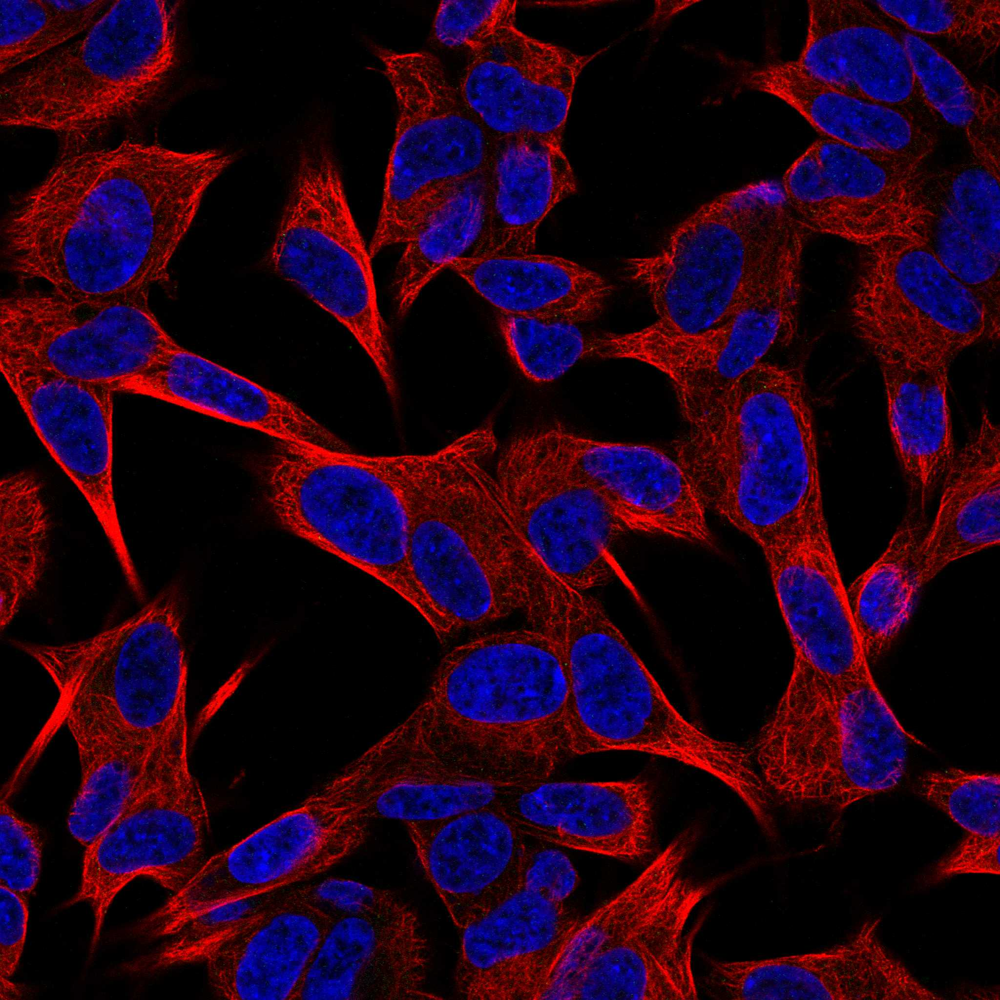
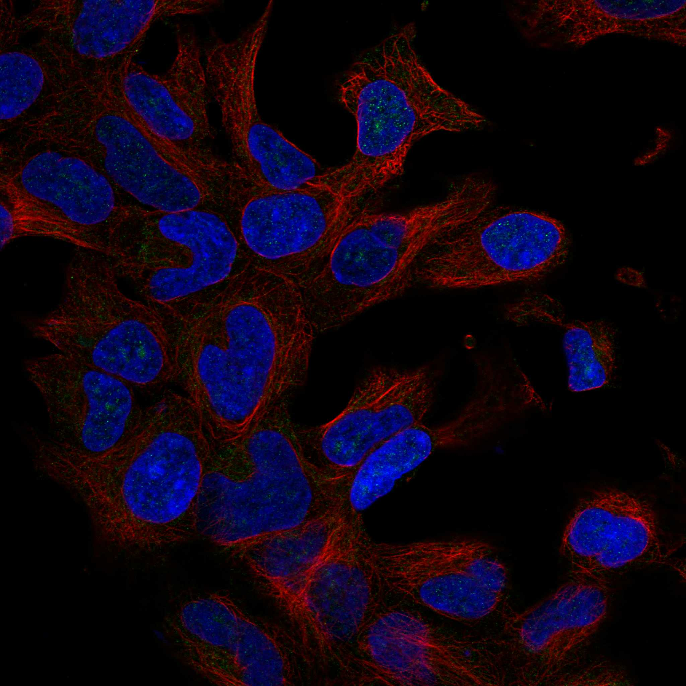
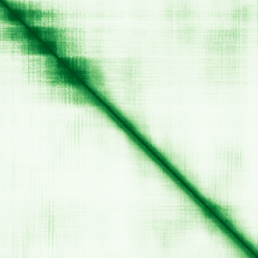

type: protein-evaluation gene: "FAM133B" date: 2026-06-03 tags: [protein-scout, nuclear-protein, evaluation] status: scored ---
FAM133B 核蛋白评估报告 (Full Re-evaluation)
1. 基本信息
| 项目 | 内容 |
|---|---|
| 基因名 / 别名 | FAM133B |
| 蛋白名称 | Protein FAM133B |
| 蛋白大小 | 247 aa / 28.4 kDa |
| UniProt ID | Q5BKY9 |
| 评估日期 | 2026-06-03 |
IF 图像:  
2. 评分总览
| 维度 | 得分 | 满分 | 加权后 | 关键证据摘要 |
|---|---|---|---|---|
| 核定位特异性 | 7/10 | ×4 | 28 | HPA: Nucleoli; 额外: Nucleoplasm; UniProt: 无注释 |
| 蛋白大小 | 10/10 | ×1 | 10 | 247 aa / 28.4 kDa |
| 研究新颖性 | 10/10 | ×5 | 50 | PubMed strict=3 篇 (≤20→10) |
| 三维结构 | 6/10 | ×3 | 18 | AlphaFold v6 pLDDT=62.7; PDB: 无 |
| 调控结构域 | 7/10 | ×2 | 14 | InterPro: IPR026766 |
| PPI 网络 | 3/10 | ×3 | 9 | STRING 15 partners; IntAct 13 interactions |
| 互证加分 | — | max +3 | 0.5 | PDB+AF+STRING+IntAct cross-validation |
| 原始总分 | 129.5/180 | |||
| 归一化总分 | 71.9/100 |
3. 详细分析
3.1 核定位证据
| 来源 | 定位 | 可信度 |
|---|---|---|
| Protein Atlas (IF) | Nucleoli; 额外: Nucleoplasm | Enhanced |
| UniProt | 无注释 | Swiss-Prot/TrEMBL |
IF 图像获取: IF图像已下载并嵌入 (2张)
GO Cellular Component:
- 无 GO-CC 注释
结论: 主要核定位，HPA 可靠性良好，有辅助数据源支持。
3.2 蛋白大小评估
评价: 大小适中（200-800 aa），适合常规生化实验和结构解析。
3.3 研究现状
| 指标 | 数值 |
|---|---|
| PubMed strict count | 3 |
| PubMed broad count | 4 |
| 别名(未计入scoring) | 无 |
关键文献: 1. Cross-species analysis of the canine and human bladder cancer transcriptome and exome.. *Genes, chromosomes & cancer*. PMID: 28052524 2. Breakpoint analysis of transcriptional and genomic profiles uncovers novel gene fusions spanning multiple human cancer types.. *PLoS genetics*. PMID: 23637631 3. FusionPro, a Versatile Proteogenomic Tool for Identification of Novel Fusion Transcripts and Their Potential Translation Products in Cancer Cells.. *Molecular & cellular proteomics : MCP*. PMID: 31208993
评价: 极度新颖，几乎未被系统研究（PubMed ≤20篇）。
3.4 三维结构分析
| 指标 | 数值 |
|---|---|
| AlphaFold 版本 | v6 |
| AlphaFold 平均 pLDDT | 62.7 |
| 高置信度残基 (pLDDT>90) 占比 | 8.1% |
| 置信残基 (pLDDT 70-90) 占比 | 25.9% |
| 中等置信 (pLDDT 50-70) 占比 | 34.8% |
| 低置信 (pLDDT<50) 占比 | 31.2% |
| 有序区域 (pLDDT>70) 占比 | 34.0% |
| 可用 PDB 条目 | 无 |
PAE (Predicted Aligned Error): 
评价: AlphaFold 预测质量有限（pLDDT=62.7），有序残基占 34.0%。
3.5 结构域分析
| 来源 | 结构域 |
|---|---|
| InterPro/Pfam | InterPro: IPR026766 |
染色质调控潜力分析: 存在已知结构域注释，可作为功能研究的结构基础。
3.6 PPI 网络
STRING 预测互作 (combined score >0.4):
| Partner | Combined Score | Experimental | 功能类别 |
|---|---|---|---|
| DNAJC2 | 0.624 | 0.000 | — |
| RBM48 | 0.552 | 0.000 | — |
| CDK6 | 0.522 | 0.000 | — |
| RSRC2 | 0.521 | 0.000 | — |
| FAM204A | 0.496 | 0.000 | — |
| GATAD1 | 0.488 | 0.000 | — |
| HEPACAM2 | 0.483 | 0.000 | — |
| VPS50 | 0.477 | 0.000 | — |
| ANKRD52 | 0.476 | 0.000 | — |
| FAM98C | 0.475 | 0.000 | — |
实验验证互作 (IntAct):
| Partner | 方法 | PMID | ||
|---|---|---|---|---|
| env | psi-mi:"MI:0007"(anti tag coimmunoprecipitation) | imex:IM-17346 | pubmed:22190034 | |
| ESR1 | psi-mi:"MI:0676"(tandem affinity purification) | pubmed:31527615 | imex:IM-26954 | |
| PPP4R2 | psi-mi:"MI:0007"(anti tag coimmunoprecipitation) | pubmed:26496610 | imex:IM-24272 | |
| TSNAX | psi-mi:"MI:0007"(anti tag coimmunoprecipitation) | pubmed:26496610 | imex:IM-24272 | |
| ATR | psi-mi:"MI:0007"(anti tag coimmunoprecipitation) | pubmed:25852190 | imex:IM-23674 | |
| LINC02910 | psi-mi:"MI:0007"(anti tag coimmunoprecipitation) | pubmed:33961781 | imex:IM-29278 | |
| S100P | psi-mi:"MI:0007"(anti tag coimmunoprecipitation) | pubmed:33961781 | imex:IM-29278 | |
| FAM133A | psi-mi:"MI:0007"(anti tag coimmunoprecipitation) | pubmed:33961781 | imex:IM-29278 | |
| GNL2 | psi-mi:"MI:0007"(anti tag coimmunoprecipitation) | pubmed:33961781 | imex:IM-29278 | |
| PEA15 | psi-mi:"MI:0007"(anti tag coimmunoprecipitation) | pubmed:33961781 | imex:IM-29278 |
PPI 互证分析:
- STRING + IntAct 均有数据
- STRING partners: 15，IntAct interactions: 13
- 调控相关比例: 1 / 15 = 7%
评价: STRING 15 个预测互作，IntAct 13 个实验互作。调控相关配体占比 7%。
3.7 多库互证
| 维度 | 来源 | 结果 | 是否一致 |
|---|---|---|---|
| 三维结构 | AlphaFold pLDDT=62.7 + PDB: 无 | pLDDT=62.7, v6 | 仅预测 |
| 定位 | UniProt + HPA | 无注释 / Nucleoli; 额外: Nucleoplasm | 待确认 |
| PPI | STRING + IntAct | 15 + 13 interactions | 数据充分 |
互证加分明细:
- PDB + AlphaFold 双源验证: +0
- 多库定位一致: +0
- STRING + IntAct 双源验证: +0.5
- 结构域 + AlphaFold 质量: +0
- PDB 多条目覆盖: +0
总分: +0.5 / max +3
4. 总体评价
推荐等级: ⭐⭐⭐⭐
核心优势: 1. FAM133B — Protein FAM133B，极度新颖，几乎未被系统研究（PubMed ≤20篇）。 2. 蛋白大小247 aa，大小适中（200-800 aa），适合常规生化实验和结构解析。
风险/不确定性: 1. PubMed 3 篇，研究基础极有限，功能注释不完整 2. AlphaFold 预测质量一般（pLDDT=62.7），需要更多实验结构验证
下一步建议:
- [ ] 查阅最新关键文献补充研究背景
- [ ] 获取 Protein Atlas IF 图像确认亚细胞定位
- [ ] 设计体外实验验证核定位及潜在调控功能
5. 数据来源
- UniProt: https://www.uniprot.org/uniprotkb/Q5BKY9
- Protein Atlas: https://www.proteinatlas.org/ENSG00000234545-FAM133B/subcellular
- PubMed: https://pubmed.ncbi.nlm.nih.gov/?term=FAM133B
- AlphaFold: https://alphafold.ebi.ac.uk/entry/Q5BKY9
- STRING: https://string-db.org/network/9606.ENSP00000
- Data fetched live: 2026-06-03
<!-- DOMAIN_HUMANPPI_REPAIR_START -->
Domain/SMART 与 humanPPI 补充（2026-06-06）
SMART / UniProt domain
| Source | Data |
|---|---|
| UniProt | Q5BKY9 |
| SMART | 未在 UniProt xref 中检出 SMART 条目 |
| UniProt Domain [FT] | 未检出显式 UniProt Domain feature |
| InterPro | IPR026766; |
| Pfam | 未检出 |
humanPPI / HPA Interaction
Source: https://www.proteinatlas.org/ENSG00000234545-FAM133B/interaction
未从 HPA Interaction 页面解析到互作伙伴；需人工复核或使用其他 humanPPI 来源。 <!-- DOMAIN_HUMANPPI_REPAIR_END -->